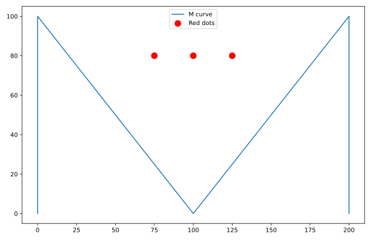

Abschnitt 1
Vorbereitung: Python und Matplotlib
Da wir im Folgenden komplexe Iterationen und dynamische Systeme
untersuchen wollen, ist der Computer ein unverzichtbares
Werkzeug. Wir nutzen Python und die Bibliothek
matplotlib, um Daten zu berechnen und zu
visualisieren. Hier ist eine kurze Wiederholung der wichtigsten
Konzepte aus dem Informatikunterricht, fokussiert auf das, was
wir für die Simulationen dieses Kapitels benötigen.
Anders als im gedruckten Skript
Alle Code-Beispiele auf dieser Seite stehen in einer Werkbank: Sie lassen sich frei verändern und mit Ausführen starten. Erzeugt der Code einen Plot, erscheint er unter der Konsolenausgabe.
Python Code ausführen
Um den Python-Code ausführen zu können, haben Sie zwei Möglichkeiten:
- Sie können Python lokal auf Ihrem Rechner installieren und in einem Editor oder einer IDE Ihrer Wahl arbeiten (zum Beispiel VSCodium). Diese Methode wird empfohlen.
- Auf dieser Seite läuft Python direkt im Browser (siehe Hinweis auf der Übersichtsseite) — für schnelle Experimente reicht das völlig, für grössere eigene Projekte lohnt sich eine lokale Installation.
Listen, Indizes und Slicing
Um eine Folge von Zahlen zu speichern (z. B. die Entwicklung einer Population über die Zeit), verwenden wir Listen. In Python sind Listen geordnet, und jedes Element hat eine Position (Index).
Besonders wichtig für unsere Simulationen sind der Zugriff auf das letzte Element (um den nächsten Wert zu berechnen) und das «Ausschneiden» (Slicing) von Teilen der Liste.
- Vorwärts-Index
-
Beginnt bei 0.
liste[0]ist das erste Element. - Rückwärts-Index
-
Beginnt bei −1.
liste[-1]ist das letzte Element. Das ist extrem praktisch für Iterationen (\(x_n\) hängt von \(x_{n-1}\) ab), da wir nicht wissen müssen, wie lang die Liste gerade ist. - Slicing
-
Mit dem Doppelpunkt
:können wir Teilbereiche wählen. Die Syntax ist[Start:Ende]. Dabei ist das Element beim Ende-Index nicht mehr enthalten.
Beispiel. Zugriff auf Listenelemente
Schleifen und Listenmanipulation
Für Simulationen starten wir oft mit einer Liste, die nur den Startwert enthält, und fügen dann Schritt für Schritt neue Werte hinzu.
Beispiel. Iteratives Füllen einer Liste
Funktionen
Um den Code sauber zu halten, lagern wir die Berechnungsvorschrift (die Trägerfunktion) oft aus.
Beispiel. Definition einer einfachen Funktion
Daten visualisieren mit Matplotlib
Die Bibliothek matplotlib.pyplot (meistens als
plt importiert) ist der Standard für
wissenschaftliche Diagramme in Python. Ein typischer Plot
besteht aus drei Schritten: Daten bereitstellen, Plot-Befehl
ausführen, Anzeigen.
Liniendiagramme
In einem Liniendiagramm werden Punkte miteinander verbunden.
Wir müssen dazu einfach eine Liste von x-Koordinaten
(x) und eine Liste von y-Koordinaten
(y) angeben. Die entsprechenden Punkte werden
dann in dieser Reihenfolge miteinander verbunden. Geben wir
keine Liste von x-Koordinaten an, so wird dafür einfach
[0, 1, 2, …] verwendet.
Beispiel. Grundgerüst eines Linien-Plots
Streudiagramme (Scatter Plots)
Manchmal wollen wir Punkte nur als Einzelwerte darstellen,
ohne sie mit einer Linie zu verbinden (z. B. wenn es
keinen sinnvollen zeitlichen Zusammenhang gibt oder wir sehr
viele chaotische Punkte haben, wie beim Feigenbaum-Diagramm in
Abschnitt 2).
Dafür nutzen wir den Befehl plt.scatter. Dieser
funktioniert genau analog zu plt.plot, nur
werden da die Punkte nicht miteinander verbunden.
Beispiel. Erstellen eines Streudiagramms
In der offiziellen Dokumentation finden Sie zahlreiche nützliche Beispiele zur umfangreichen Bibliothek.
Übung
Schreiben Sie mit Hilfe der Bibliothek Matplotlib in Python ein Programm, das die folgende Grafik erzeugt.

Lösungsvorschlag
Lösungsvorschlag (matplotlib-example.py)